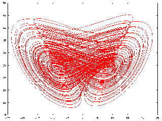

![[IMAGE]](aznewpwlxy.gif) Figure 2: The new PWL attractor, xy-plane projection |
![[IMAGE]](aznewpwlxz.gif) xz-plane projection |
![[IMAGE]](aznewpwlyz.gif) yz-plane projection |
Aziz Alaoui M.A.
Lab. of Appl. Math., Le Havre University, France.
Sc. Lett. Vol. 3, Issue 1, march 2001
We report a finding of a new piecewise-linear chaotic attractor derived from a system of differential equations of the type Chen-Lorenz. A brief discussion about equilibrium points and their stability is given. Some of the fundamental routes to chaos and bifurcation phenomena are demonstrated with various numerical examples. The chaotic evidence is done using fractal dimensions, Lyapunov exponents, FFT....
Chen and Ueta [1999] have recently reported a finding of a new chaotic attractor in a system which is similar to Lorenz's. This system is given by the following dimensionless equations,
and exhibits the following chaotic attractor, figure 1.

Figure 1: Chen attractor's
The new piecewise-linear system we report here, shows the following strange attractors:
|
Figure 2: The new PWL attractor, xy-plane projection |
xz-plane projection |
yz-plane projection |
 Back to the previous page
Back to the previous page
Back to Aziz Alaoui's home page